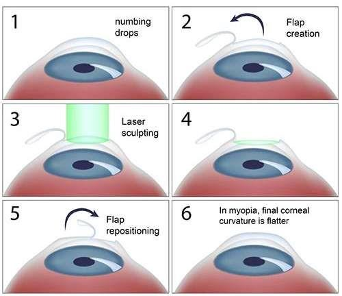

Cornea · Keratorefractive surgery
Keratorefractive surgery

Corneal surgery that changes the refractive power of the cornea to correct errors of refraction.
Types:
- Photorefractive keratectomy (PRK):
- PRK means using the Excimer laser for removal of a precise amount of tissues of the anterior corneal stroma.
- for modifying the corneal surface and changing the refractive power of the cornea for correction of errors of refraction.
- Laser in situ keratomileusis (LASIK):
- Using the Excimer laser for removal of a precise amount of the corneal stroma deep to a superficial flap of 130 –160 um thickness created by a microkeratome.
Its anterior part is visible, white and opaque.